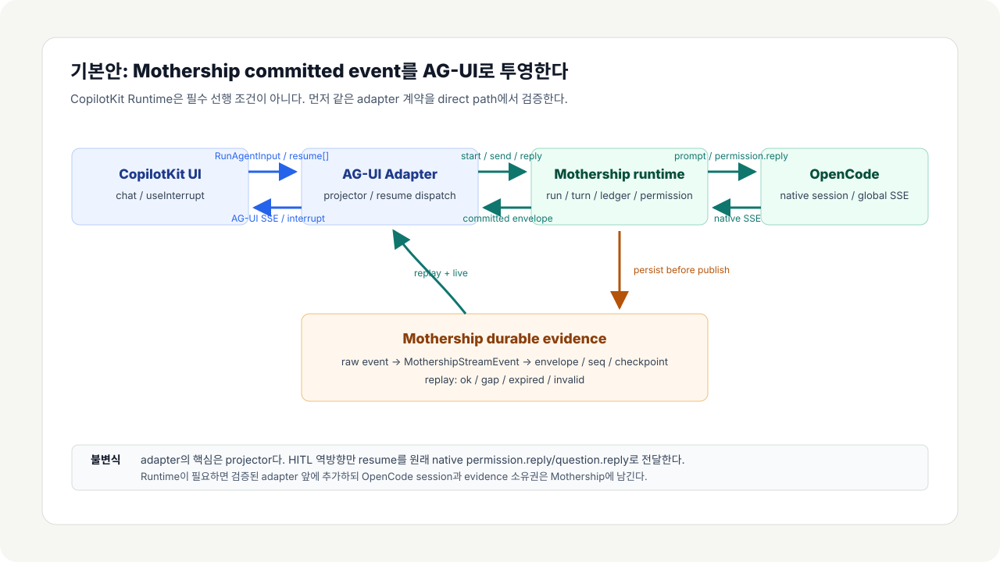
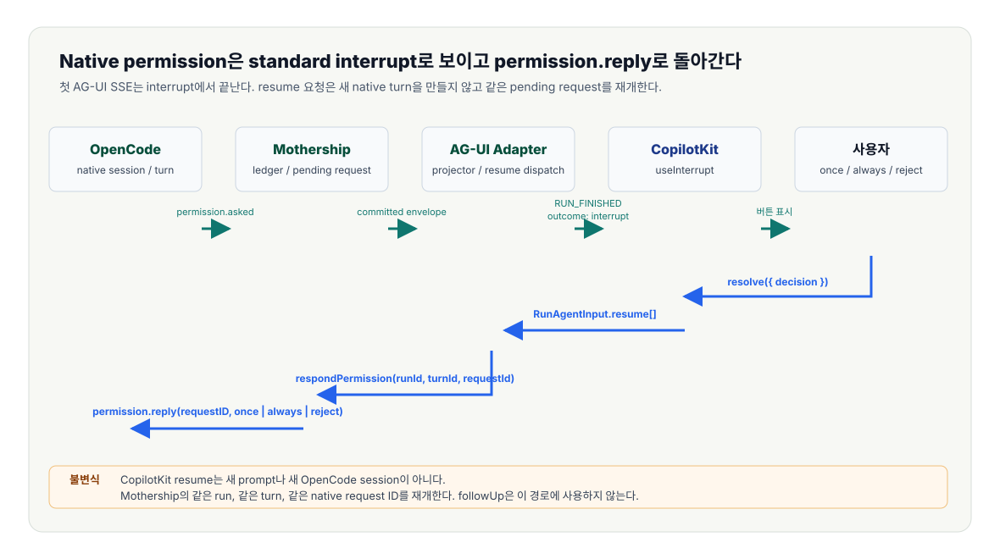

2026-08-01 아키텍처 결정
Mothership과 CopilotKit은 실행 원천 소유권을 명확히 해야 공존할 수 있다.
Mothership은 기존 자체 에이전트 실행/runtime surface다. CopilotKit은 FrontendTool, RunHandler, AG-UI UI/runtime이다. Mothership native stream과 evidence를 CopilotKit이 대신 소유하면 권한, 질문, tool result, 완료 판정이 깨진다.
followUp은 FrontendTool의 자동 재실행 설정이다.

한 줄 규칙
Mothership native stream은 원천이다. 기존 Mothership runtime이 먼저 받는다. CopilotKit은 AG-UI projection만 받는다.
Mothership baseline
Mothership이 여기서 의미하는 것
이 문서의 Mothership은 이미 자체 에이전트 실행 방식, session, stream 소비, tool result, permission/question loop, evidence 저장을 가진 기존 runtime이다. CopilotKit은 이 실행 원천을 대체하지 않고 AG-UI projection과 UI/runtime layer로 붙어야 한다.
공개 문서에는 내부 파일 경로나 비공개 구현명을 쓰지 않는다. 기준은 "기존 Mothership이 먼저 실행하고 먼저 관찰한다"는 ownership이다.
Mothership common core
Mothership의 공통 부분
Mothership의 공통부는 특정 UI, card, chat bubble이 아니다. 기존 Mothership 방식에서 반복되는 핵심은 native 실행을 시작하고, 그 실행의 원본 event와 증거를 잃지 않고, 사람이 보는 화면으로 투영하는 control kernel이다.
runId, turnId, provider/native session id
후속 turn이 같은 agent session을 재사용하는 규칙
새 session은 명시적인 새 run에서만 만드는 lifecycle
경계 비교
역할 비교
이 구조에서 CopilotKit은 실행 권한의 주인이 아니다. CopilotKit은 agent UI와 AG-UI runtime layer다. 기존 에이전트 실행의 control plane은 Mothership에 남아 있어야 한다.
| 영역 | Mothership | CopilotKit |
|---|---|---|
| 주요 역할 | 기존 에이전트 실행과 evidence를 소유하는 runtime/control plane | agent 상호작용을 위한 UI/runtime framework |
| native 실행 소유자 | agent session, backend tool, permission/question 응답 | 등록된 AG-UI agent에 실행을 위임 |
| stream 원천 | 기존 Mothership native/provider event | SSE로 흐르는 AG-UI BaseEvent stream |
| 저장 소유자 | Mothership DB, native timeline, tool ledger, evidence readback | AgentRunner thread/event store |
| 완료 판정 | 관찰된 native stream, tool result, evidence readback | RUN_FINISHED 같은 AG-UI lifecycle projection |
의도적으로 선택할 것
구성 선택
"CopilotKit이 가로채면 Mothership이 못 받는다"는 걱정은 CopilotKit이 Mothership보다 upstream에 있을 때 맞다. Mothership을 upstream에 두면 CopilotKit이 소비하는 것은 의도적으로 공개한 AG-UI projection이다.
옵션 A: CopilotKit Runtime을 거치는 Mothership bridge
Browser -> CopilotKit Runtime -> HttpAgent ->
Mothership AG-UI endpoint -> existing Mothership native session.
이중 라우트가 맞다. CopilotKit 공식 문서의 runtime-backed AG-UI 연결 방식과 같은 계열이며, runtime routing, server-side middleware, auth 경계를 CopilotKit 쪽에 두고 싶을 때 쓴다.
단, 이 구성이 Mothership-first의 유일한 권장안은 아니다. Runtime은 AG-UI projection을 프록시할 뿐이고, Mothership native stream과 evidence의 source of truth가 되면 안 된다.
const runtime = new CopilotRuntime({
agents: {
mothership: new HttpAgent({
url: process.env.MOTHERSHIP_AGUI_URL!,
}),
},
runner: new InMemoryAgentRunner(),
});옵션 B: 직접 연결 Mothership agent
Browser -> HttpAgent -> Mothership AG-UI endpoint.
이 agent는 CopilotKit Runtime을 우회한다. Mothership 실행 소유권을
가장 단순하게 보존하는 projection-only 구성이다.
production에서는 CopilotKit의 supported direct path인
selfManagedAgents로 연결한다. 대신 인증, 권한, CORS,
rate limit, replay는 Mothership endpoint가 직접 책임진다.
<CopilotKit
selfManagedAgents={{ mothership: mothershipAgent }}
>
<CopilotChat agentId="mothership" />
</CopilotKit>정리
CopilotKit 관점의 일반 권장 경로는 runtime-backed path다. 그래서
CopilotRuntime -> HttpAgent -> AG-UI endpoint는 지원되는
구성이다. 하지만 Mothership 기준의 최우선 원칙은 "기존 Mothership이
먼저 소비하고 먼저 기록한다"이다. runtime 기능이 필요 없거나 이중
라우트가 운영상 부담이면 selfManagedAgents 직접 연결을
Mothership projection의 기본안으로 둔다.
HttpAgent로 외부 AG-UI endpoint를 등록하는 패턴은 지원된다.
HttpAgent가 AG-UI event를 소비하고 Runtime이 다시 SSE로 인코딩한다.
따라서 두 hop 모두 timeout, abort, reconnect, buffering 검증이 필요하다.
selfManagedAgents 직접 연결을 먼저 본다.
이 경우 CopilotKit Runtime은 빠지고 Mothership endpoint가 보안과 replay를 맡는다.
projection-only UI가 목표라면 이 경로가 더 단순하다.
런타임 custom runner tee
Browser -> CopilotKit Runtime -> custom AgentRunner ->
SDK/Mothership. CopilotKit이 agent를 실행해야 하지만 Mothership도
모든 AG-UI event를 관찰해야 할 때 쓰는 구성이다.
이 방식은 기본적으로 projection-level AG-UI event를 관찰한다. provider-native chunk까지 필요하면 SDK adapter 단계에서 raw tee를 별도로 넣어야 한다.
class MothershipRunner extends InMemoryAgentRunner {
override run(request) {
// event를 Mothership에 persist/tee한 뒤 위임한다.
return super.run(request);
}
}위험한 구성
Browser -> CopilotKit Runtime -> BuiltInAgent/direct SDK adapter -> provider SDK stream.
Mothership이 실행을 통제하거나 검증해야 한다면 이 구성은 쓰면 안 된다. Mothership이 stream 경로 밖에 있으므로 single-consumer SDK stream을 놓칠 수 있다. 명시적인 tee를 추가하거나 실행을 Mothership 뒤로 옮겨야 한다.
// 위험: CopilotKit이 SDK call을 소유한다.
const runtime = new CopilotRuntime({
agents: {
default: new BuiltInAgent({ model: "..." }),
},
});상관관계 계약
ID 매핑
CopilotKit thread 변경은 Mothership이 native run에 매핑하기 전까지 UI-level event일 뿐이다. browser reconnect 때문에 새 provider session이 우발적으로 생기면 안 된다.
agentIdMothership 화면/agent 표면. 보통 mothership으로 고정한다.threadId하나의 Mothership runId에 매핑한다.runIdMothership turnId 또는 correlation id에 매핑한다.messageIdnative message correlation에 매핑하고 browser에는 sanitized id만 노출한다.Mothership에서 AG-UI로
스트림 변환 계약
Mothership AG-UI endpoint는 RunAgentInput을 받고
text/event-stream을 반환한다. provider chunk를 그대로
흘리는 것이 아니라 Mothership event를 AG-UI event로 변환한다.
| Mothership 관찰값 | AG-UI event 계열 | 규칙 |
|---|---|---|
| turn accepted | RUN_STARTED |
AG-UI run마다 한 번만 emit하고 stable id를 포함한다. |
| assistant text delta | TEXT_MESSAGE_CHUNK 또는 start/content/end |
빈 delta는 emit하지 않는다. |
| tool call과 args | TOOL_CALL_START, TOOL_CALL_ARGS |
toolCallId와 JSON-stable args를 보존한다. |
| tool result 관찰 | TOOL_CALL_END, TOOL_CALL_RESULT |
tool 성공 여부는 Mothership evidence로 판정한다. |
| state snapshot 또는 delta | STATE_SNAPSHOT, STATE_DELTA |
host secret이 아니라 sanitized status만 노출한다. |
| native error 또는 completion | RUN_ERROR, RUN_FINISHED |
Mothership completion 기준을 만족한 뒤에만 emit한다. |
frontend tool 후속 실행
followUp: false는 겹침 차단 스위치다
정확한 옵션명은 followUp이다. followup이 아니다.
이건 Mothership 속성이 아니라 CopilotKit FrontendTool 옵션이다.
CopilotKit RunHandler는 tool handler가 끝난 뒤
tool?.followUp !== false이면 agent를 다시 실행한다.
followUp: false는 그 자동 재실행만 끊는다.
CopilotKit이 continuation을 소유하는 기본 흐름
- agent가 frontend tool call을 emit한다.
- browser가 등록된 handler를 실행한다.
- CopilotKit이
role: "tool"result message를 삽입한다. followUp !== false라서 CopilotKit이 agent를 다시 실행한다.- model이 tool result를 읽고 다음 답변 또는 다음 tool call을 만든다.
Mothership이 continuation을 소유하는 bridge 흐름
- agent가 Mothership bridge frontend tool을 호출한다.
- browser handler가 Mothership API에 permission, answer, command를 전달한다.
- CopilotKit은 tool result를 UI/message state에 기록한다.
followUp: false가 CopilotKit의 두 번째 model run을 막는다.- Mothership native stream이 같은 session에서 continuation과 evidence를 만든다.
followUp: false를 둔다
의미는 "Mothership이 실행하지 말라"가 아니다. browser handler는 실행되고 Mothership API도 호출된다. 다만 CopilotKit이 tool result 직후 자기 agent를 자동으로 다시 돌리지 않는다. continuation은 Mothership의 같은 native session, raw SSE, evidence projection이 만든다.
useFrontendTool({
name: "answer_mothership_question",
description: "Send a human answer back to the pending Mothership native question.",
parameters: z.object({
runId: z.string(),
requestId: z.string(),
answer: z.string(),
}),
followUp: false,
handler: async ({ runId, requestId, answer }) => {
await mothership.respondQuestion({ runId, requestId, answer });
return { accepted: true, owner: "mothership-native-session" };
},
});answer_mothership_question
approve_mothership_permission
send_mothership_turn
open_mothership_run
정리하면 followUp: false는 CopilotKit의 자동 agent 재실행을 끄는
옵션이다. Mothership 실행, Mothership raw SSE, permission/question loop를 끄는
옵션이 아니다.
tool 권한
host tool을 frontend tool로 등록하지 않는다
filesystem, process, git mutation, renderer direct bridge 같은 실제 실행 도구는 native Mothership capability다.
request_mothership_change
approve_mothership_checkpoint
answer_mothership_question
show_mothership_evidence
사람 승인 루프
permission은 Mothership session state다
CopilotKit은 approval UI를 렌더링할 수 있다. 하지만 source of truth가 되면 안 된다. 사용자의 결정은 Mothership을 호출해야 하고, Mothership은 같은 native session에 응답해야 한다.

저장과 보안
실제 작업의 기준은 Mothership evidence다
CopilotKit runner persistence는 UI thread replay에는 유용하다. 하지만 Mothership native 작업의 유일한 durable record가 되면 안 된다.
분리 저장
raw provider/native event는 Mothership에 저장한다. AG-UI projection event는 CopilotKit runner나 browser state에 둘 수 있다.
ID 상관관계 유지
CopilotKit threadId, AG-UI runId, Mothership runId, Mothership turnId, provider session id 매핑을 보관한다.
endpoint 보호
모든 Mothership AG-UI request를 인증하고 threadId -> runId 접근 권한을 server-side에서 검사한다.
browser state 정제
host path, token, environment variable, raw tool payload, billing internal을 UI state에 투영하지 않는다.
운영 배포 기준
통합 체크리스트
CopilotKit과 Mothership이 안전하게 통합됐다고 말하기 전에 이 항목을 확인한다.
- Mothership이
RunAgentInput을 받는 AG-UI endpoint를 하나 제공한다. - Mothership이 기존 native/provider stream을 CopilotKit보다 먼저 소비한다.
- 모든 AG-UI
threadId가 stable MothershiprunId에 매핑된다. - 모든 AG-UI
runId가 MothershipturnId또는 correlation id에 매핑된다. - permission/question 답변은 Mothership의 pending interaction endpoint로 되돌린다.
- Mothership bridge frontend tool은
followUp: false로 CopilotKit 자동 재실행을 끊는다. - backend/native tool은 CopilotKit frontend tool로 직접 등록하지 않는다.
- browser-visible state는 sanitized 상태다.
- runtime-backed deployment를 선택했다면 Mothership을
HttpAgent로 등록한다. - self-managed deployment를 선택했다면 Mothership endpoint를 직접 인증한다.
- production 전에 reconnect/replay 동작을 정의한다.
- 완료 판정은 assistant text가 아니라 Mothership evidence에서 한다.
참고 자료
출처
이 페이지는 공개 가능한 CopilotKit source와 sanitized Mothership 공존 계약만 기준으로 작성했다. 내부 Mothership 구현 파일과 비공개 운영 지식은 이 페이지에 적지 않는다.
- GitHub Docs: GitHub Pages publishing source 설정
- GitHub Docs: GitHub Pages custom workflow
- CopilotKit Docs: Copilot Runtime
- CopilotKit Docs: Runtime HTTP endpoints
- CopilotKit Docs: AG-UI agent 연결
- CopilotKit Docs: self-managed agents
- CopilotKit Docs: AgentRunner와 persistence
- CopilotKit Docs: FrontendTool followUp property
- CopilotKit source: follow-up execution loop
- 외부 링크 부록: 연결된 분석 페이지 목록
- 이 repository의 Markdown 원문